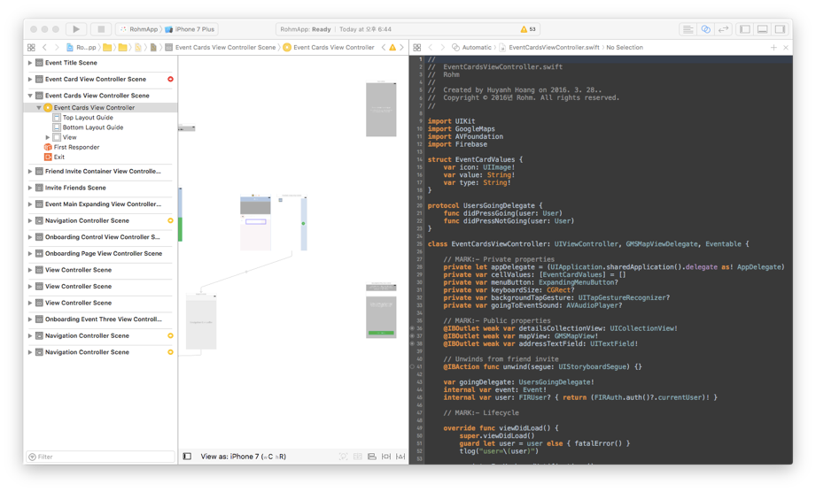

“The concept for rohm, like many ideas, was birthed from necessity. Why was it such a pain to plan things? Why is it so hard to notify everyone of changes to the plan? Why can’t we tap into events happening around us with the touch of a button?”
Cofounding team
iOS, Swift, Firebase
January 2016 - January 2017
Spelled ‘rohm,’ the application is a mobile platform for sharing, creating, and discovering local and casual events near you. In 2016, I was on the founding team as the one of the two mobile developers, building the front-end of the application.
When you log in, you're directed to map of your area, in which you can tap on one of the event markers created by other rohm users. A 12am taco run with your friends, a study session for your classmates for your upcoming midterm, it's all made simple with the press of a button and our easy to use interface.
I worked on integrating the mockups, learning Swift along the way. I had to build many custom UI components, both through xibs and pure Swift. There was a lot of legacy code that I had to rewrite, as the developers before wrote in a very Objective-C-like style even though the codebase was in Swift(they even put semicolons!). By the time we implemented 70% of the screens, I had already rewritten about 100% of the app with more readable and documented code.
In our first iteration, we did not do any testing in the beginning, and by the time we tried our prototype on a user, it was already too late. Therefore, our following iterations tried following a more lean approach. I sought after potential users at UCI based on students in clubs, our main audience. Following Running Lean by Ash Maurya, I compiled a list of questions and assumptions I made about our users, and tried discovering their mental models regarding events and what pain-points they had about existing solutions. We learned that the biggest problem they had was not the difficulty in planning the event, but rather the difficulty in getting people to commit to coming. Using that information, we were able to trim a lot of the fat in our current iteration, such as Checklists, Profiles, and Photos.
Getting up to speed with the current codebase is usually the most difficult part, especially when there is little to no documentation. In the beginning I tried to adapt my code to theirs, but it turns out that a rewrite was a lot easier. We also had to cut down a lot of the features because of deadlines and complexity. Learning which features and MVP building was a large part of the experience as well. In the end, we weren't able to launch because of internal issues, but I now have a good understanding of design, development, and business.